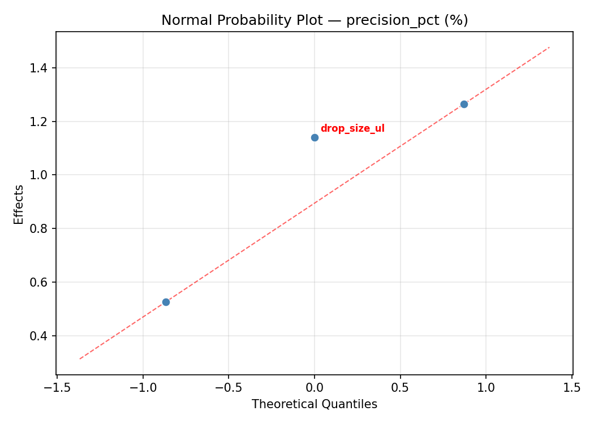
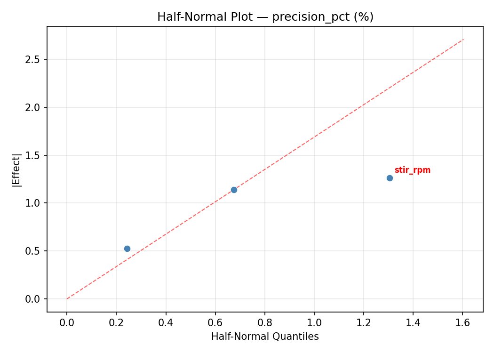
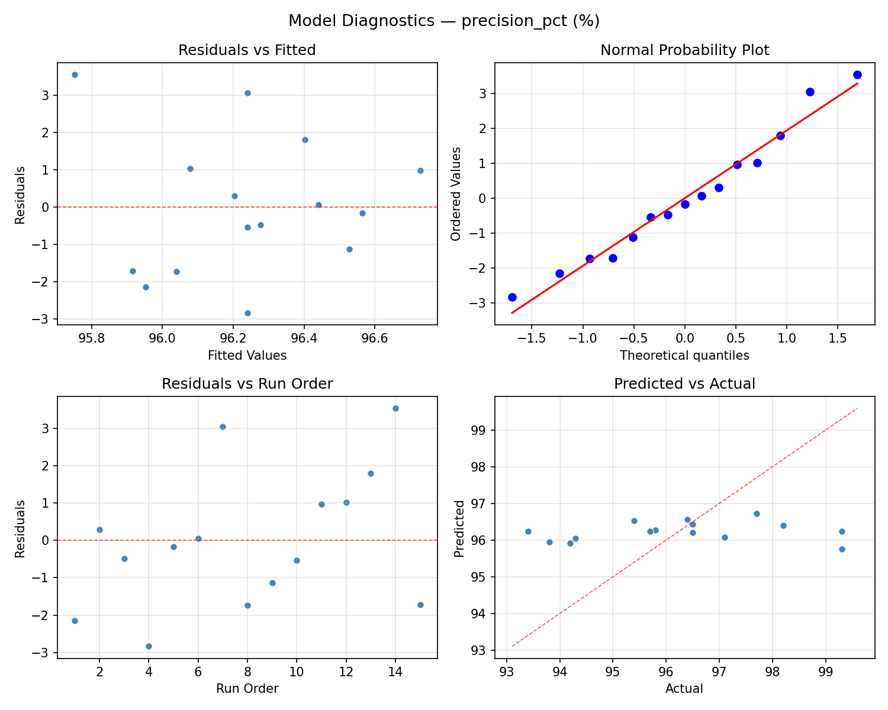
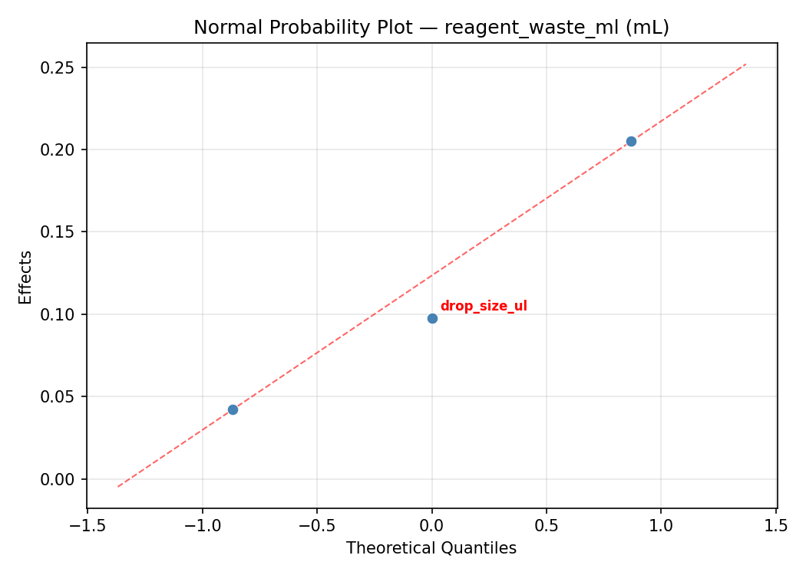
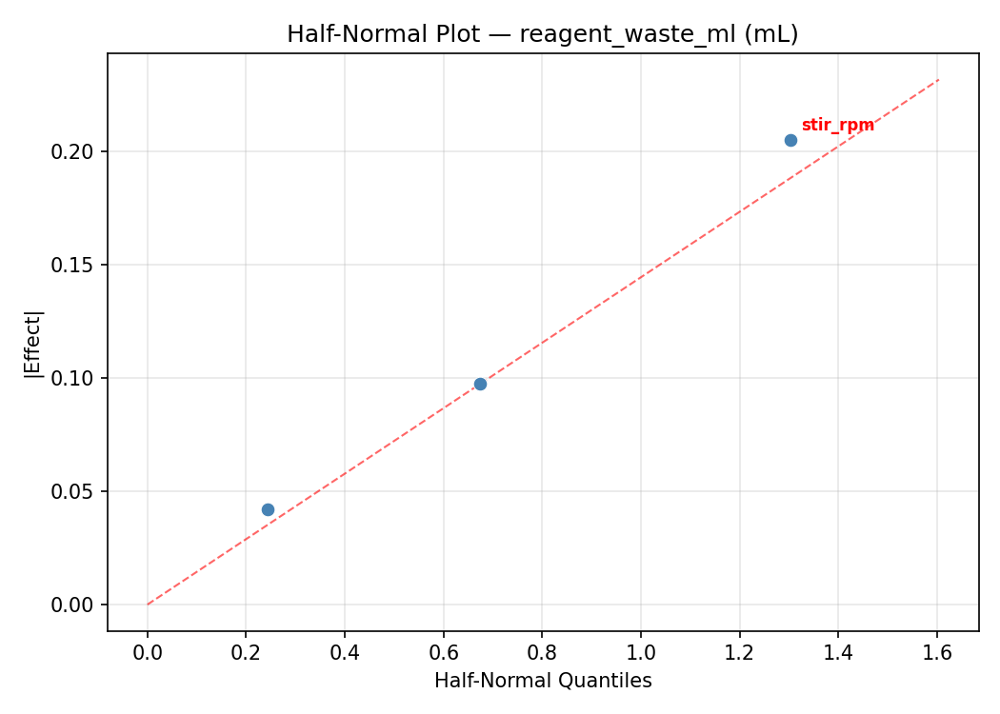
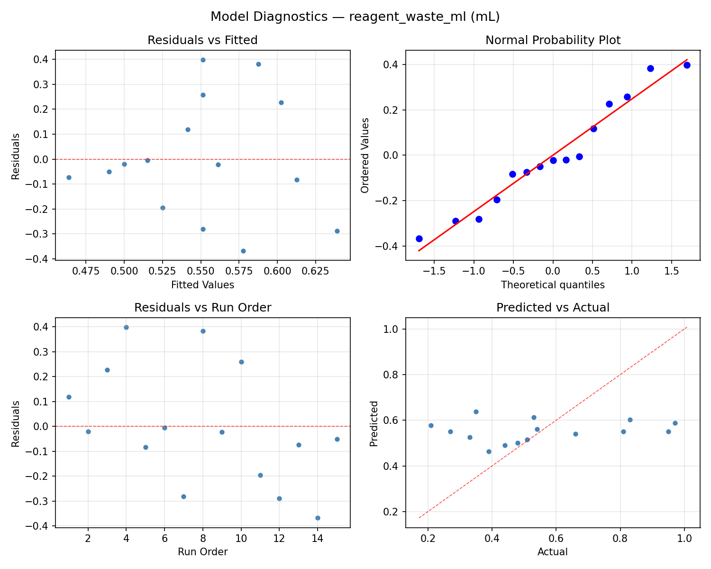

Summary
This experiment investigates titration accuracy optimization. Box-Behnken design to maximize endpoint precision and minimize reagent waste by tuning drop size, stirring speed, and indicator concentration.
The design varies 3 factors: drop size ul (uL), ranging from 10 to 100, stir rpm (rpm), ranging from 100 to 600, and indicator pct (%), ranging from 0.05 to 0.5. The goal is to optimize 2 responses: precision pct (%) (maximize) and reagent waste ml (mL) (minimize). Fixed conditions held constant across all runs include analyte = HCl, titrant = NaOH.
A Box-Behnken design was chosen because it efficiently fits quadratic models with 3 continuous factors while avoiding extreme corner combinations — requiring only 15 runs instead of the 8 needed for a full factorial at two levels.
Quadratic response surface models were fitted to capture potential curvature and factor interactions. The RSM contour plots below visualize how pairs of factors jointly affect each response.
Key Findings
For precision pct, the most influential factors were indicator pct (56.3%), stir rpm (22.6%), drop size ul (21.1%). The best observed value was 99.3 (at drop size ul = 10, stir rpm = 350, indicator pct = 0.05).
For reagent waste ml, the most influential factors were indicator pct (62.0%), stir rpm (28.5%), drop size ul (9.4%). The best observed value was 0.21 (at drop size ul = 55, stir rpm = 100, indicator pct = 0.5).
Recommended Next Steps
- Run confirmation experiments at the predicted optimal settings to validate the model.
- Consider whether any fixed factors should be varied in a future study.
Experimental Setup
Factors
| Factor | Low | High | Unit |
|---|
drop_size_ul | 10 | 100 | uL |
stir_rpm | 100 | 600 | rpm |
indicator_pct | 0.05 | 0.5 | % |
Fixed: analyte = HCl, titrant = NaOH
Responses
| Response | Direction | Unit |
|---|
precision_pct | ↑ maximize | % |
reagent_waste_ml | ↓ minimize | mL |
Configuration
{
"metadata": {
"name": "Titration Accuracy Optimization",
"description": "Box-Behnken design to maximize endpoint precision and minimize reagent waste by tuning drop size, stirring speed, and indicator concentration"
},
"factors": [
{
"name": "drop_size_ul",
"levels": [
"10",
"100"
],
"type": "continuous",
"unit": "uL"
},
{
"name": "stir_rpm",
"levels": [
"100",
"600"
],
"type": "continuous",
"unit": "rpm"
},
{
"name": "indicator_pct",
"levels": [
"0.05",
"0.5"
],
"type": "continuous",
"unit": "%"
}
],
"fixed_factors": {
"analyte": "HCl",
"titrant": "NaOH"
},
"responses": [
{
"name": "precision_pct",
"optimize": "maximize",
"unit": "%"
},
{
"name": "reagent_waste_ml",
"optimize": "minimize",
"unit": "mL"
}
],
"settings": {
"operation": "box_behnken",
"test_script": "use_cases/187_titration_accuracy/sim.sh"
}
}
Experimental Matrix
The Box-Behnken Design produces 15 runs. Each row is one experiment with specific factor settings.
| Run | drop_size_ul | stir_rpm | indicator_pct |
|---|
| 1 | 55 | 100 | 0.05 |
| 2 | 55 | 350 | 0.275 |
| 3 | 100 | 350 | 0.5 |
| 4 | 100 | 350 | 0.05 |
| 5 | 55 | 350 | 0.275 |
| 6 | 55 | 350 | 0.275 |
| 7 | 10 | 350 | 0.5 |
| 8 | 100 | 100 | 0.275 |
| 9 | 55 | 100 | 0.5 |
| 10 | 100 | 600 | 0.275 |
| 11 | 10 | 350 | 0.05 |
| 12 | 55 | 600 | 0.5 |
| 13 | 10 | 100 | 0.275 |
| 14 | 10 | 600 | 0.275 |
| 15 | 55 | 600 | 0.05 |
Step-by-Step Workflow
1
Preview the design
$ python doe.py info --config use_cases/187_titration_accuracy/config.json
2
Generate the runner script
$ python doe.py generate --config use_cases/187_titration_accuracy/config.json \
--output use_cases/187_titration_accuracy/results/run.sh --seed 42
3
Execute the experiments
$ bash use_cases/187_titration_accuracy/results/run.sh
4
Analyze results
$ python doe.py analyze --config use_cases/187_titration_accuracy/config.json
5
Get optimization recommendations
$ python doe.py optimize --config use_cases/187_titration_accuracy/config.json
6
Multi-objective optimization
With 2 competing responses, use --multi to find the best compromise via Derringer–Suich desirability.
$ python doe.py optimize --config use_cases/187_titration_accuracy/config.json --multi
7
Generate the HTML report
$ python doe.py report --config use_cases/187_titration_accuracy/config.json \
--output use_cases/187_titration_accuracy/results/report.html
Features Exercised
| Feature | Value |
|---|
| Design type | box_behnken |
| Factor types | continuous (all 3) |
| Arg style | double-dash |
| Responses | 2 (precision_pct ↑, reagent_waste_ml ↓) |
| Total runs | 15 |
Analysis Results
Generated from actual experiment runs using the DOE Helper Tool.
Response: precision_pct
Top factors: indicator_pct (56.3%), stir_rpm (22.6%), drop_size_ul (21.1%).
ANOVA
| Source | DF | SS | MS | F | p-value |
|---|
| Source | DF | SS | MS | F | p-value |
| drop_size_ul | 2 | 2.0617 | 1.0309 | 1.017 | 0.4040 |
| stir_rpm | 2 | 2.4014 | 1.2007 | 1.185 | 0.3542 |
| indicator_pct | 2 | 17.4442 | 8.7221 | 8.607 | 0.0101 |
| Lack | of | Fit | 6 | 24.8020 | 4.1337 |
| Pure | Error | 2 | 2.0267 | | |
| Error | 8 | 26.8287 | 1.0133 | | |
| Total | 14 | 48.7360 | 3.4811 | | |
Pareto Chart

Main Effects Plot

Normal Probability Plot of Effects

Half-Normal Plot of Effects

Model Diagnostics

Response: reagent_waste_ml
Top factors: indicator_pct (62.0%), stir_rpm (28.5%), drop_size_ul (9.4%).
ANOVA
| Source | DF | SS | MS | F | p-value |
|---|
| Source | DF | SS | MS | F | p-value |
| drop_size_ul | 2 | 0.0073 | 0.0036 | 0.060 | 0.9421 |
| stir_rpm | 2 | 0.0695 | 0.0347 | 0.576 | 0.5837 |
| indicator_pct | 2 | 0.2853 | 0.1426 | 2.366 | 0.1559 |
| Lack | of | Fit | 6 | 0.3390 | 0.0565 |
| Pure | Error | 2 | 0.1206 | | |
| Error | 8 | 0.4596 | 0.0603 | | |
| Total | 14 | 0.8216 | 0.0587 | | |
Pareto Chart

Main Effects Plot

Normal Probability Plot of Effects

Half-Normal Plot of Effects

Model Diagnostics

Response Surface Plots
3D surfaces fitted with quadratic RSM. Red dots are observed data points.
precision pct drop size ul vs indicator pct

precision pct drop size ul vs stir rpm

precision pct stir rpm vs indicator pct

reagent waste ml drop size ul vs indicator pct

reagent waste ml drop size ul vs stir rpm

reagent waste ml stir rpm vs indicator pct

Multi-Objective Optimization
When responses compete, Derringer–Suich desirability finds the best compromise.
Each response is scaled to a 0–1 desirability, then combined via a weighted geometric mean.
Overall Desirability
D = 0.9545
Per-Response Desirability
| Response | Weight | Desirability | Predicted | Dir |
|---|
precision_pct |
1.5 |
|
99.30 0.9545 99.30 % |
↑ |
reagent_waste_ml |
1.0 |
|
0.21 0.9545 0.21 mL |
↓ |
Recommended Settings
| Factor | Value |
|---|
drop_size_ul | 100 uL |
stir_rpm | 350 rpm |
indicator_pct | 0.5 % |
Source: from observed run #14
Trade-off Summary
Sacrifice = how much worse than single-objective best.
| Response | Predicted | Best Observed | Sacrifice |
|---|
reagent_waste_ml | 0.21 | 0.21 | +0.00 |
Top 3 Runs by Desirability
| Run | D | Factor Settings |
|---|
| #7 | 0.9252 | drop_size_ul=55, stir_rpm=600, indicator_pct=0.5 |
| #13 | 0.7664 | drop_size_ul=10, stir_rpm=600, indicator_pct=0.275 |
Model Quality
| Response | R² | Type |
|---|
reagent_waste_ml | 0.2104 | linear |
Full Multi-Objective Output
============================================================
MULTI-OBJECTIVE OPTIMIZATION
Method: Derringer-Suich Desirability Function
============================================================
Overall desirability: D = 0.9545
Response Weight Desirability Predicted Direction
---------------------------------------------------------------------
precision_pct 1.5 0.9545 99.30 % ↑
reagent_waste_ml 1.0 0.9545 0.21 mL ↓
Recommended settings:
drop_size_ul = 100 uL
stir_rpm = 350 rpm
indicator_pct = 0.5 %
(from observed run #14)
Trade-off summary:
precision_pct: 99.30 (best observed: 99.30, sacrifice: +0.00)
reagent_waste_ml: 0.21 (best observed: 0.21, sacrifice: +0.00)
Model quality:
precision_pct: R² = 0.7866 (quadratic)
reagent_waste_ml: R² = 0.2104 (linear)
Top 3 observed runs by overall desirability:
1. Run #14 (D=0.9545): drop_size_ul=100, stir_rpm=350, indicator_pct=0.5
2. Run #7 (D=0.9252): drop_size_ul=55, stir_rpm=600, indicator_pct=0.5
3. Run #13 (D=0.7664): drop_size_ul=10, stir_rpm=600, indicator_pct=0.275
Full Analysis Output
=== Main Effects: precision_pct ===
Factor Effect Std Error % Contribution
--------------------------------------------------------------
indicator_pct 2.6750 0.4817 56.3%
stir_rpm 1.0750 0.4817 22.6%
drop_size_ul 1.0000 0.4817 21.1%
=== ANOVA Table: precision_pct ===
Source DF SS MS F p-value
-----------------------------------------------------------------------------
drop_size_ul 2 2.0617 1.0309 1.017 0.4040
stir_rpm 2 2.4014 1.2007 1.185 0.3542
indicator_pct 2 17.4442 8.7221 8.607 0.0101
Lack of Fit 6 24.8020 4.1337 4.079 0.2099
Pure Error 2 2.0267 1.0133
Error 8 26.8287 1.0133
Total 14 48.7360 3.4811
=== Summary Statistics: precision_pct ===
drop_size_ul:
Level N Mean Std Min Max
------------------------------------------------------------
10 4 95.8000 1.4353 93.8000 97.1000
100 4 96.8000 2.3395 94.3000 99.3000
55 7 96.1714 2.0031 93.4000 99.3000
stir_rpm:
Level N Mean Std Min Max
------------------------------------------------------------
100 4 95.7750 1.2606 94.2000 97.1000
350 7 96.1571 1.9025 93.8000 99.3000
600 4 96.8500 2.5723 93.4000 99.3000
indicator_pct:
Level N Mean Std Min Max
------------------------------------------------------------
0.05 4 94.4750 1.3351 93.4000 96.4000
0.275 7 96.7286 1.0144 95.4000 98.2000
0.5 4 97.1500 2.5671 94.2000 99.3000
=== Main Effects: reagent_waste_ml ===
Factor Effect Std Error % Contribution
--------------------------------------------------------------
indicator_pct 0.3400 0.0625 62.0%
stir_rpm 0.1564 0.0625 28.5%
drop_size_ul 0.0518 0.0625 9.4%
=== ANOVA Table: reagent_waste_ml ===
Source DF SS MS F p-value
-----------------------------------------------------------------------------
drop_size_ul 2 0.0073 0.0036 0.060 0.9421
stir_rpm 2 0.0695 0.0347 0.576 0.5837
indicator_pct 2 0.2853 0.1426 2.366 0.1559
Lack of Fit 6 0.3390 0.0565 0.937 0.5988
Pure Error 2 0.1206 0.0603
Error 8 0.4596 0.0603
Total 14 0.8216 0.0587
=== Summary Statistics: reagent_waste_ml ===
drop_size_ul:
Level N Mean Std Min Max
------------------------------------------------------------
10 4 0.5875 0.2053 0.3500 0.8300
100 4 0.5425 0.3057 0.2700 0.9700
55 7 0.5357 0.2606 0.2100 0.9500
stir_rpm:
Level N Mean Std Min Max
------------------------------------------------------------
100 4 0.4650 0.0889 0.3500 0.5400
350 7 0.6214 0.2679 0.2700 0.9700
600 4 0.5150 0.3151 0.2100 0.9500
indicator_pct:
Level N Mean Std Min Max
------------------------------------------------------------
0.05 4 0.7775 0.2175 0.5300 0.9700
0.275 7 0.4871 0.1636 0.3300 0.8100
0.5 4 0.4375 0.2792 0.2100 0.8300
Optimization Recommendations
=== Optimization: precision_pct ===
Direction: maximize
Best observed run: #7
drop_size_ul = 10
stir_rpm = 350
indicator_pct = 0.05
Value: 99.3
RSM Model (linear, R² = 0.1633, Adj R² = -0.0649):
Coefficients:
intercept +96.2400
drop_size_ul +0.5375
stir_rpm -0.5750
indicator_pct -0.6125
RSM Model (quadratic, R² = 0.5145, Adj R² = -0.3595):
Coefficients:
intercept +95.4000
drop_size_ul +0.5375
stir_rpm -0.5750
indicator_pct -0.6125
drop_size_ul*stir_rpm +0.0750
drop_size_ul*indicator_pct +0.2000
stir_rpm*indicator_pct -0.7250
drop_size_ul^2 -0.2000
stir_rpm^2 -0.1750
indicator_pct^2 +1.9500
Curvature analysis:
indicator_pct coef=+1.9500 convex (has a minimum)
drop_size_ul coef=-0.2000 concave (has a maximum)
stir_rpm coef=-0.1750 concave (has a maximum)
Notable interactions:
stir_rpm*indicator_pct coef=-0.7250 (antagonistic)
Predicted optimum (from linear model, at observed points):
drop_size_ul = 55
stir_rpm = 100
indicator_pct = 0.05
Predicted value: 97.4275
Surface optimum (via L-BFGS-B, linear model):
drop_size_ul = 100
stir_rpm = 100
indicator_pct = 0.05
Predicted value: 97.9650
Model quality: Weak fit — consider adding center points or using a different design.
Factor importance:
1. indicator_pct (effect: 2.6, contribution: 53.8%)
2. stir_rpm (effect: 1.1, contribution: 23.9%)
3. drop_size_ul (effect: 1.1, contribution: 22.3%)
=== Optimization: reagent_waste_ml ===
Direction: minimize
Best observed run: #14
drop_size_ul = 55
stir_rpm = 100
indicator_pct = 0.5
Value: 0.21
RSM Model (linear, R² = 0.3916, Adj R² = 0.2257):
Coefficients:
intercept +0.5513
drop_size_ul -0.0937
stir_rpm +0.1400
indicator_pct +0.1087
RSM Model (quadratic, R² = 0.6151, Adj R² = -0.0777):
Coefficients:
intercept +0.5800
drop_size_ul -0.0937
stir_rpm +0.1400
indicator_pct +0.1087
drop_size_ul*stir_rpm -0.0600
drop_size_ul*indicator_pct -0.0975
stir_rpm*indicator_pct +0.1150
drop_size_ul^2 +0.0512
stir_rpm^2 +0.0237
indicator_pct^2 -0.1288
Curvature analysis:
indicator_pct coef=-0.1288 concave (has a maximum)
drop_size_ul coef=+0.0512 negligible curvature
stir_rpm coef=+0.0237 negligible curvature
Predicted optimum (from linear model, at observed points):
drop_size_ul = 55
stir_rpm = 600
indicator_pct = 0.5
Predicted value: 0.8001
Surface optimum (via L-BFGS-B, linear model):
drop_size_ul = 100
stir_rpm = 100
indicator_pct = 0.05
Predicted value: 0.2088
Model quality: Weak fit — consider adding center points or using a different design.
Factor importance:
1. stir_rpm (effect: 0.3, contribution: 39.4%)
2. indicator_pct (effect: 0.2, contribution: 34.2%)
3. drop_size_ul (effect: 0.2, contribution: 26.4%)